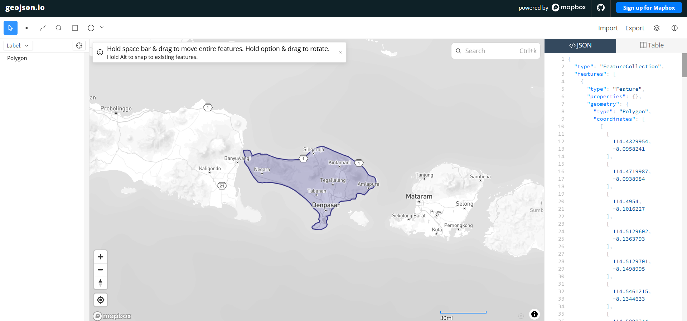

Crawling Data NO₂ (A)#
Peramalan Kadar NO₂ di Daerah Bali#
Latar Belakang#
Nitrogen Dioksida (NO₂) merupakan salah satu polutan udara utama yang berasal dari aktivitas pembakaran bahan bakar fosil, seperti kendaraan bermotor, industri, dan pembangkit listrik. Konsentrasi NO₂ yang tinggi dapat berdampak negatif terhadap kesehatan manusia, terutama pada sistem pernapasan, serta berkontribusi terhadap pembentukan hujan asam dan penurunan kualitas lingkungan.
Provinsi Bali merupakan salah satu destinasi wisata utama di Indonesia yang memiliki aktivitas transportasi dan pembangunan yang terus meningkat. Peningkatan aktivitas tersebut berpotensi memengaruhi kualitas udara, termasuk kadar NO₂ di atmosfer. Oleh karena itu, pemantauan dan analisis kadar NO₂ secara berkala sangat penting untuk mengetahui kondisi kualitas udara serta mendukung pengambilan kebijakan lingkungan yang tepat.
Dalam proyek ini dilakukan proses crawling data kadar NO₂ menggunakan data penginderaan jauh (remote sensing) yang diperoleh dari satelit Sentinel-5P melalui platform Google Earth Engine (GEE). Data yang berhasil dikumpulkan kemudian digunakan untuk membangun model peramalan (forecasting) kadar NO₂ di wilayah Bali. Hasil peramalan diharapkan dapat memberikan gambaran tren kualitas udara pada periode mendatang dan menjadi dasar dalam upaya pengendalian pencemaran udara.
Pengumpulan Data#
Pertama kita akan mengumpulkan data Time Series Harian kadar NO2 di daerah Bangkalan. Pengumpulan data dari sumber website https://dataspace.copernicus.eu/ , buat akun terlebih dahulu di website copernicus tersebut.
Dokumentasi cara pengambilan data di https://documentation.dataspace.copernicus.eu/notebook-samples/openeo/NO2Covid.html .
Untuk menuliskan code Python untuk mengambil data, silahkan kunjungi halaman https://dataspace.copernicus.eu/analyse/jupyterlab, klik Access JupyterLab, scroll kebawah sedikit …, lalu pilih Python 3 (ipykernel)
Pengambilan Data Kadar NO₂ di Kabupaten Bangkalan#
Pada tahap ini, kita akan mengambil data kadar Nitrogen Dioksida (NO₂) di wilayah Kabupaten Bangkalan menggunakan platform OpenEO yang terhubung dengan Copernicus Data Space Ecosystem. Data akan diambil untuk rentang waktu tanggal … sampai ….
Sebelum melakukan pengambilan data, instal terlebih dahulu library OpenEO dengan menjalankan perintah berikut:
pip install openeo
Setelah proses instalasi selesai, hubungkan notebook dengan layanan OpenEO menggunakan kode berikut:
import openeo
connection = openeo.connect(
"openeo.dataspace.copernicus.eu"
).authenticate_oidc()
Saat baris kode di atas dijalankan, sistem akan meminta proses autentikasi akun Copernicus. Output yang muncul kurang lebih sebagai berikut:
Visit (link authentikasi) 📋 to authenticate.
✅ Authorized successfully
Authenticated using device code flow.
Klik tautan autentikasi yang diberikan pada output, kemudian login menggunakan akun Copernicus Data Space Ecosystem yang telah dimiliki. Setelah proses login berhasil, notebook akan terhubung dengan server OpenEO dan siap digunakan untuk mengakses data satelit Sentinel-5P yang berisi informasi konsentrasi NO₂.
aoi = {
"type": "Polygon",
"coordinates": [
[
[114.4329954, -8.0958241],
[114.4719987, -8.0938984],
[114.4954, -8.1016227],
[114.5129602, -8.1363793],
[114.5129701, -8.1498995],
[114.5461215, -8.1344633],
[114.5890344, -8.1229031],
[114.5929401, -8.1325608],
[114.6514120, -8.1325370],
[114.6806547, -8.1460427],
[114.7450880, -8.1693644],
[114.7918741, -8.1771050],
[114.8386260, -8.1847602],
[114.8620181, -8.1866970],
[114.9010012, -8.1867007],
[114.9750619, -8.1810843],
[115.0101359, -8.1617491],
[115.0472159, -8.1305869],
[115.0939755, -8.0901812],
[115.1466340, -8.0650178],
[115.1739543, -8.0610959],
[115.1973522, -8.0610959],
[115.2554956, -8.0845689],
[115.2825583, -8.0981569],
[115.3900509, -8.1422332],
[115.4310550, -8.1556912],
[115.4602053, -8.1769729],
[115.4913145, -8.1982366],
[115.5245024, -8.2232851],
[115.5518702, -8.2367523],
[115.5867929, -8.2715369],
[115.6022655, -8.2947181],
[115.6157849, -8.3159628],
[115.6311619, -8.3352950],
[115.6626304, -8.3429284],
[115.6804183, -8.3505814],
[115.6918958, -8.3699088],
[115.6951947, -8.3950723],
[115.6928549, -8.4105427],
[115.6810725, -8.4317336],
[115.6660615, -8.4528477],
[115.6315238, -8.4643548],
[115.6083726, -8.4951782],
[115.5829956, -8.5183125],
[115.5497597, -8.5048239],
[115.5204867, -8.5048259],
[115.5088122, -8.5125342],
[115.5089315, -8.5337330],
[115.4973673, -8.5568667],
[115.4641540, -8.5568645],
[115.4486684, -8.5703634],
[115.3980190, -8.5761500],
[115.3570193, -8.5800014],
[115.2712710, -8.6590420],
[115.2595810, -8.6995215],
[115.2576360, -8.7110877],
[115.2225448, -8.7207271],
[115.2342482, -8.7303658],
[115.2342594, -8.7515718],
[115.2225614, -8.7592817],
[115.2225614, -8.7727719],
[115.2303612, -8.8016777],
[115.2186615, -8.8209471],
[115.1952120, -8.8363161],
[115.1639484, -8.8478025],
[115.1249462, -8.8458545],
[115.0918536, -8.8382062],
[115.0840667, -8.8247363],
[115.0879602, -8.8131708],
[115.1015861, -8.8092943],
[115.1093946, -8.7996749],
[115.1211097, -8.7881348],
[115.1406253, -8.7804462],
[115.1543051, -8.7766193],
[115.1582132, -8.7612089],
[115.1484630, -8.7496452],
[115.1523611, -8.7322983],
[115.1562576, -8.6995304],
[115.1328563, -8.6706160],
[115.0958089, -8.6397733],
[115.0704583, -8.6012154],
[115.0236551, -8.5549413],
[114.9222537, -8.4758946],
[114.8676714, -8.4450635],
[114.7935776, -8.4180189],
[114.7136349, -8.4025886],
[114.6453851, -8.3987272],
[114.6102814, -8.4045110],
[114.5693310, -8.3967940],
[114.5283882, -8.3485684],
[114.5010906, -8.3041941],
[114.4777337, -8.2579146],
[114.4445630, -8.2154441],
[114.4386975, -8.1864829],
[114.4523826, -8.1652850],
[114.4386859, -8.1343570],
[114.4328424, -8.1092685],
[114.4329954, -8.0958241]
]
]
}
s5post = connection.load_collection(
"SENTINEL_5P_L2",
temporal_extent=["2024-01-01", "2026-05-01"],
spatial_extent={
"west": 114.4328424,
"south": -8.8478025,
"east": 115.6951947,
"north": -8.0610959
},
bands=["NO2"],
)
s5p_no2_daily = s5post.aggregate_temporal_period(
reducer="mean",
period="day"
)
s5p_no2_aoi = s5p_no2_daily.aggregate_spatial(
reducer="mean",
geometries=aoi
)
Code diatas memerlukan titik koordinasi area yang akan diambil data -nya, untuk mengambil titik koordinasi kaian kunjungi webiste https://geojson.io/#map=14.8/-7.04732/112.69463 . Didalam website tersebut kalian akan memilih daerah dengan cara memberi shape kotak didaerah yang ingin kalian ambil datanya.

Di panel sebelah kanan terdapat data JSON yang berupa koordinat daerah yang kalian pilih, kalian salin terus sesuaikan dengan code diatas di bagian variabel “aoi” dan spatial_extent.
Lalu kalian tambahkan baris code dibawah untuk memulai pengambilan data:
job = s5post.execute_batch(title="NO2 in Bali", outputfile="NO2Bali.nc")
Tunggu proses pengambilan data, output proses seperti berikut: